When sunlight weaves golden spots through the leaves, and a stream splashes cool water over the ankles, summer portraits have their own fresh mood. With its light body and high image quality, the Canon EOS R100 is a great partner for summer moments. It is like a summer-mood collector. On a sunny day, I took the EOS R100 and a model, and tried its full range of summer techniques.
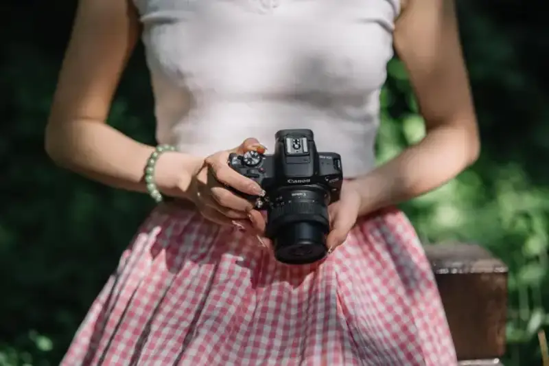
Canon EOS R100
Canon EOS R100
The Canon EOS R100 weighs only 309 grams. It is the smallest and lightest camera in the EOS R line, so I could hold it all day on a hot summer. Its 24.1-megapixel APS-C sensor, with the DIGIC X processor, renders soft skin tones even under high-contrast summer light. In dappled noon shade, the model's face transitions naturally, and the green plants do not turn yellow or over-saturated.
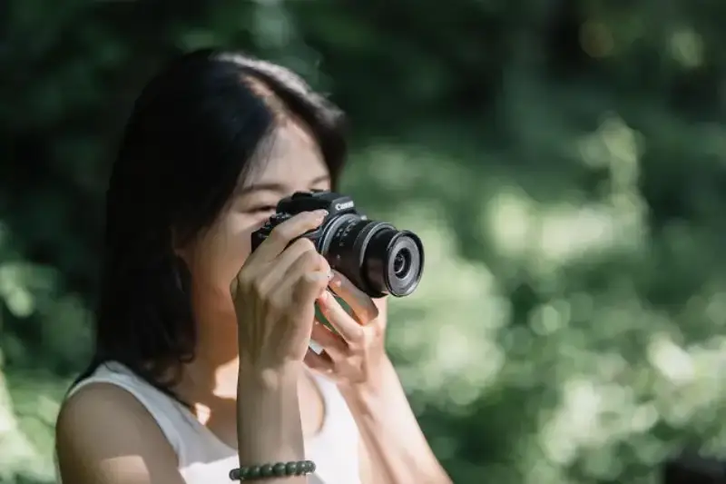
Canon EOS R100
Also worth noting, the built-in Scene Intelligent Auto mode, Creative Assist, and SCN special scene modes auto-optimize the saturation of blue and green, so straight-out-of-camera colors already feel like summer.
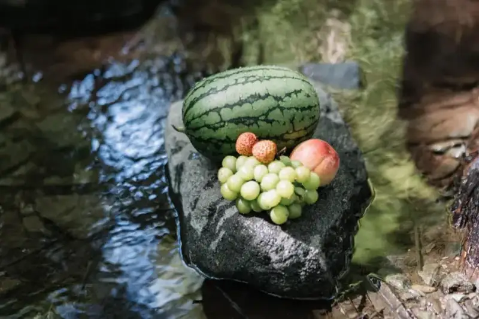
Shot on the Canon EOS R100, 1/60s, F1.8, ISO 100, -0.3EV
Shot on the Canon EOS R100, 1/400s, F1.8, ISO 100, -0.3EV
In summer, the best time to shoot is before 10 a.m. or after 4 p.m. The rest of the day is hard for photos. But if the setting allows, such as the stream I found flowing through a metasequoia forest, you need not worry so much about time and light.
Shot on the Canon EOS R100, 1/400s, F1.8, ISO 100, -0.3EV
The Canon EOS R100 uses an APS-C CMOS sensor. In portraits, the background blurs strongly and the model stands out. Because the blur comes from the lens optics and the large sensor, not from post processing, the edge of the subject looks more natural, and the image has less noise.
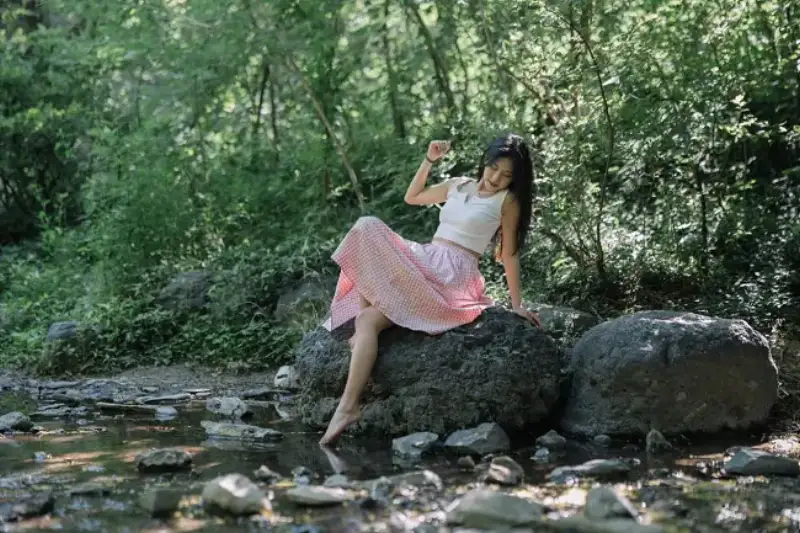
Shot on the Canon EOS R100, 1/160s, F1.8, ISO 100, -0.3EV
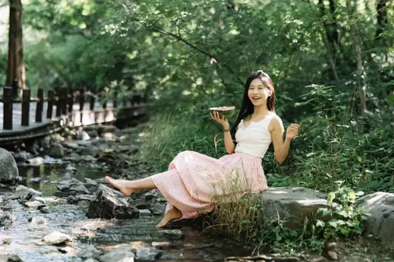
Shot on the Canon EOS R100, 1/125s, F1.8, ISO 100, -0.3EV
If you are unsure how to direct a model, here is an example from my shoot: try to lightly kick the water with your toe, like when you were a child, and swing your hair so the water flies toward the lens. These interactive prompts bring out a natural expression. The eye AF of the Canon EOS R100 locks the eyes in real time, so even a quick head turn does not lose focus.
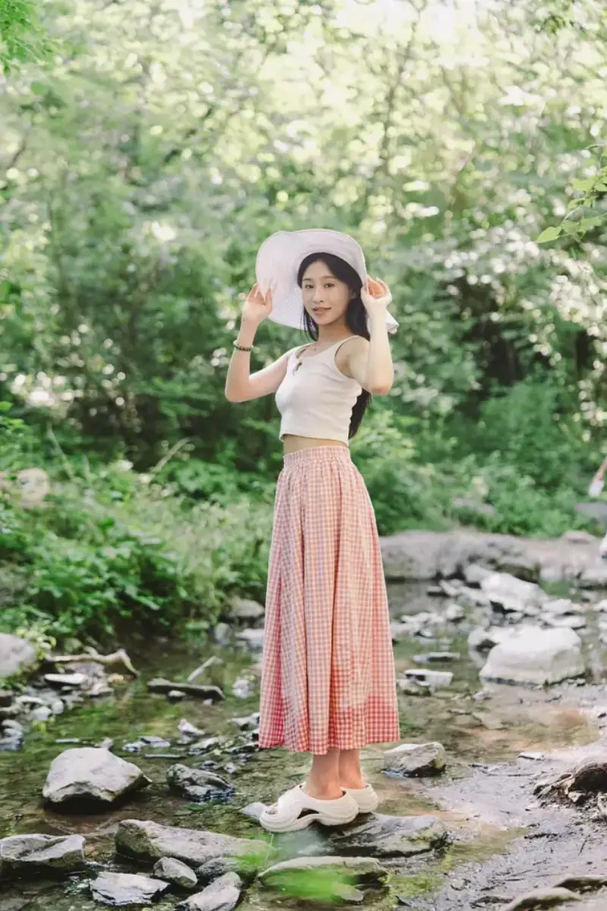
Shot on the Canon EOS R100, 1/125s, F1.8, ISO 100, 0EV
The Canon EOS R100 shoots at 6.5 frames per second. Many readers worry this is too slow to catch the moment. That worry is not needed. For my subject, 6.5 fps was enough. For example, I had the model walk in the stream, called out by chance, and easily caught the moment she turned back.
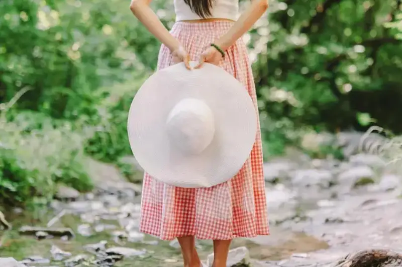
Shot on the Canon EOS R100, 1/100s, F1.8, ISO 100, 0EV
Between shots, I found the model's large straw hat and her red-and-white checkered dress were a perfect match. So I had her hold the hat, stand with her back to me in the green stream. Shallow depth of field blurred the busy background, simplified the setting, and made the model stand out. It built a quiet, pleasant mood that fits the relaxed summer feel I wanted. The whole image feels like a story.
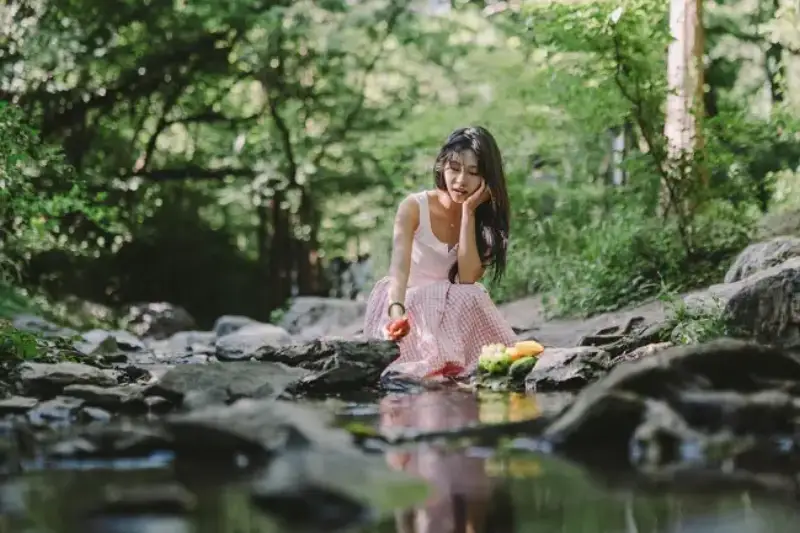
Shot on the Canon EOS R100, 1/200s, F1.8, ISO 100, -0.3EV
For a better summer-mood portrait, I tried a low angle. The EOS R100 has no flip screen, but a low angle is not hard: just squat down. For this summer portrait, I used the stream and green plants to build a fresh mood. Shallow depth of field blurred the background and made the model stand out. Her pose was lazy and natural, and the fruit added a touch of daily life. With soft light, the light EOS R100 easily caught the relaxed moment.
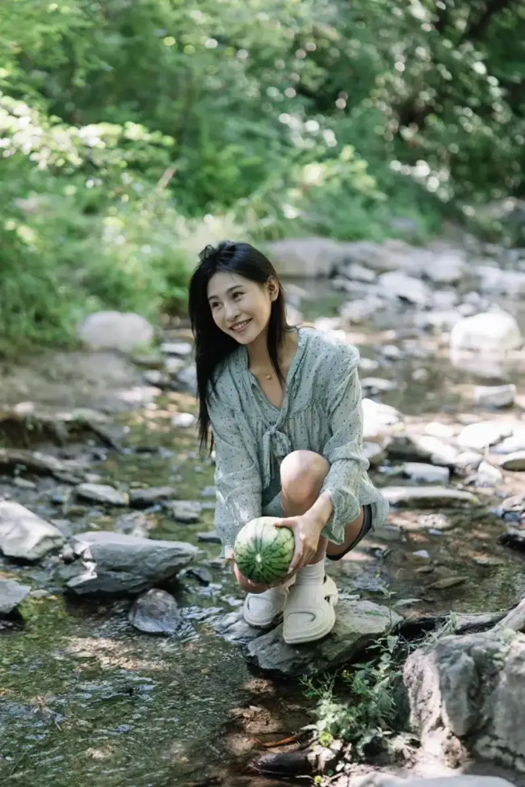
Shot on the Canon EOS R100, 1/100s, F1.8, ISO 100, -0.3EV
The image quality of the EOS R100 is very good. In this photo, the light green floral dress with a small watermelon is full of summer mood. The stream and green plants in the background blur into soft spots, highlighting the subject without stealing the scene. Sunlight through the leaves wraps the image in a gentle filter. The EOS R100 is just right for this kind of scene: light, easy to use, and accurate in color, so it holds the fresh summer feel. Following this approach, anyone can get a summer-like movie photo.
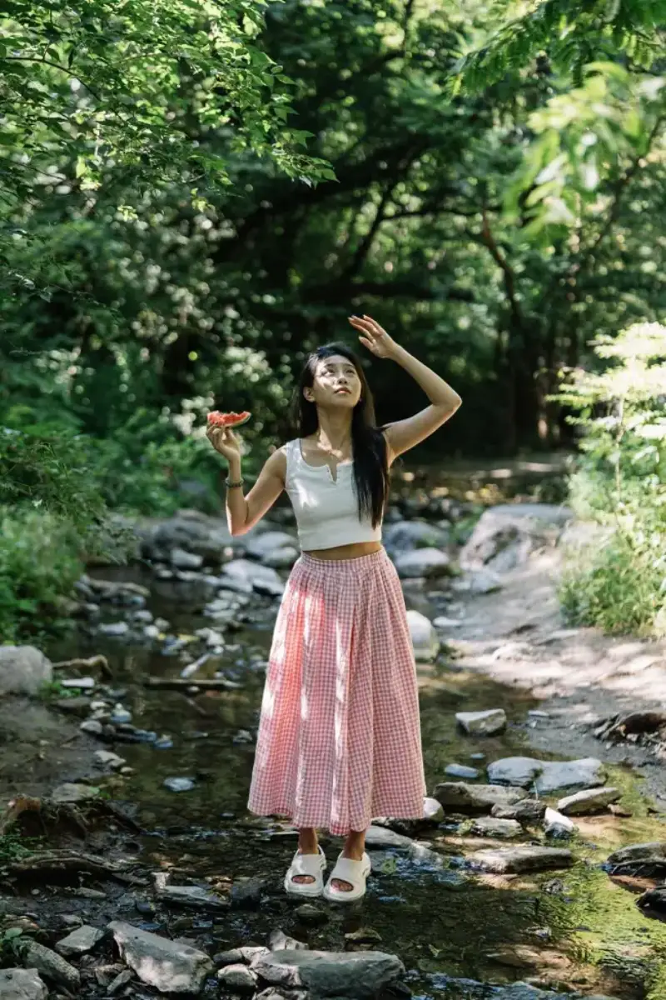
Shot on the Canon EOS R100, 1/250s, F1.8, ISO 100, -0.3EV
Also, for summer portraits, use the light well. Most of my shots used side backlight, so sunlight came from behind the model's side, outlined her hair, and formed a highlight band on the fruit, making the red flesh stand out. The EOS R100 renders color well, and easily records the beauty of the moment.
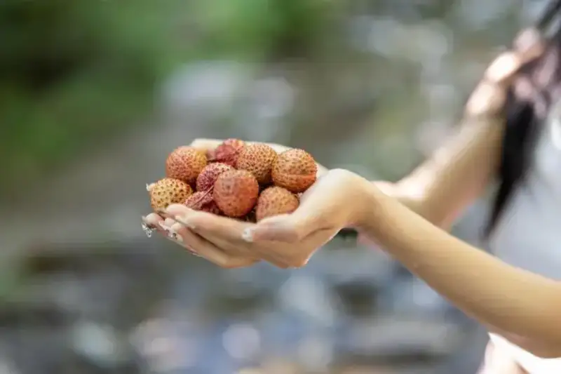
Shot on the Canon EOS R100, 1/125s, F1.8, ISO 100, -0.3EV
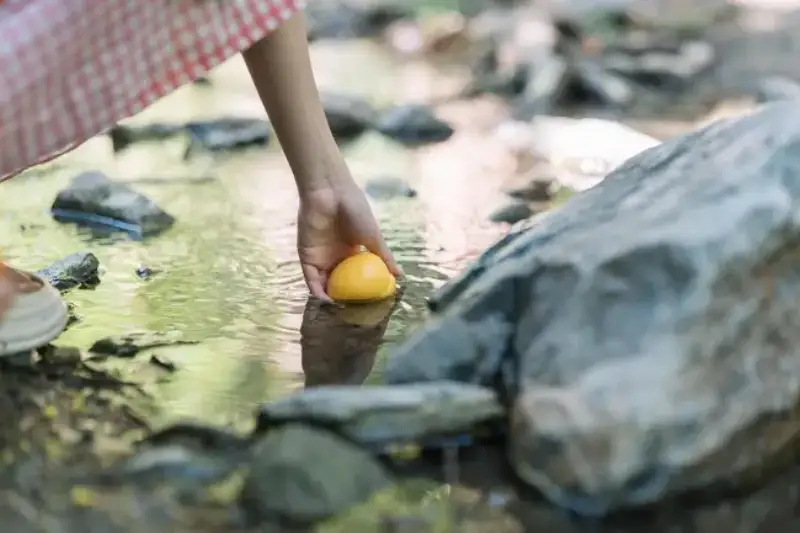
Shot on the Canon EOS R100, 1/160s, F1.8, ISO 100, -0.3EV
Although the auto white balance of the EOS R100 is already accurate, clever use of white-balance shift gives better straight-out results. In the menu, shift the white balance slightly toward B2 (blue) and M2 (magenta), and the fruit and reds become brighter, while the model's skin looks clearer.
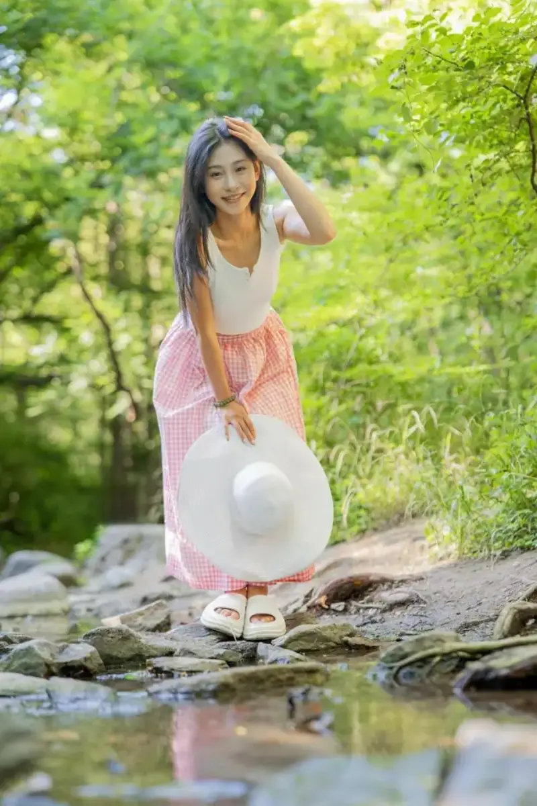
Shot on the Canon EOS R100, 1/125s, F1.8, ISO 100, 0EV
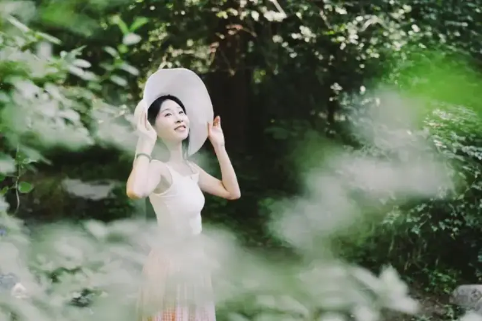
Shot on the Canon EOS R100, 1/160s, F1.8, ISO 100, -0.3EV
Also, I tried the foreground-frame method: a few hanging green leaves enter the foreground, and a wide aperture turns them into a natural frame focused on the model in the midground. I had the model stand behind the leaves. All I had to do was direct her and press the shutter, and I could trust the EOS R100 with the rest.

Shot on the Canon EOS R100, 1/250s, F1.8, ISO 100, 0.3EV
In short, the Canon EEOS R100, with its light design and smart focus, frees summer portraits from heavy gear. In this shoot, the light body made handheld shooting easy, and in the 0.1 second the model turned, the 6.5 fps burst caught every moving expression.
This summer, take this summer-mood machine, and record the cicadas in the shade, the sweet scent of the fruit basket, and the bright smile around the model's eyes. After all, the best summer photo is never a pile of technique. It makes the camera an extension of feeling, so each shutter freezes the heart beating moment: this is summer.